Remote AerialMapping Spectrometer
The Capstone Design project at the VCU School of Engineering is meant to be the climax of every engineering student’s undergraduate education. Along the way, we gained valuable experience of working in teams, including group dynamics, dealing with conflicts, meeting time-driven deliverables and deadlines, and communicating among team members, project sponsors, and faculty advisors.
- Sternheimer Design Award
- NASA Langley sponsor
- Raspberry Pi 3B
- LIDAR-Lite v3
- STS-VIS spectrometer
- Custom PCB
- 3D printing
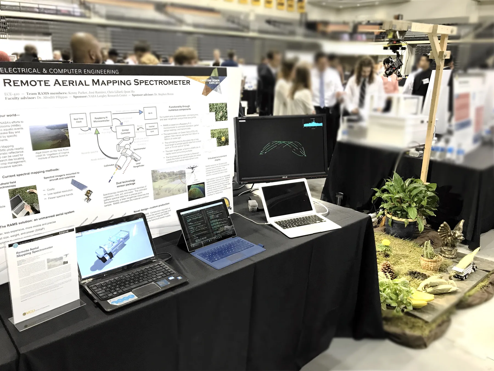
Finding harmful algal blooms from the air.
According to the EPA, harmful algal blooms may occur more frequently in coastal areas like the Chesapeake Bay due to warming waters and increased nutrient pollution. Algal blooms cause aquatic dead zones which damage the ecosystem and can produce toxins which are dangerous to animals and humans. Continual environmental monitoring is required to research algal blooms and to prevent harm to residents and industries.
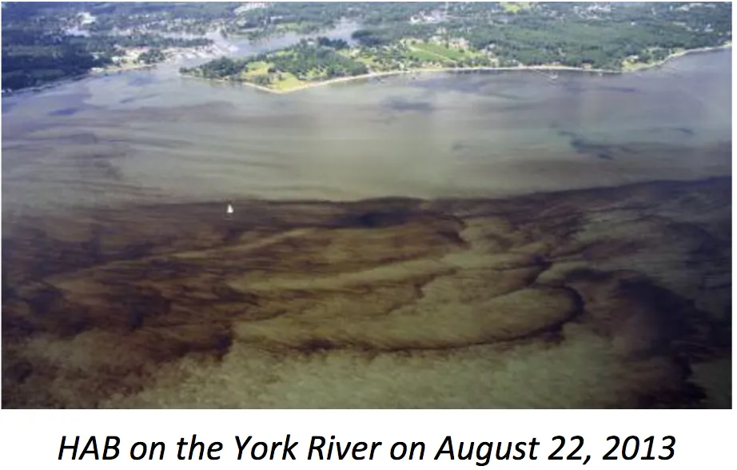
We researched technologies to locate harmful algal blooms and found spectroscopic remote surveying an effective approach. A material’s wavelength-dependent reflectance reveals its material composition. Unfortunately, existing methods which can map spectral characteristics are lacking. Field researchers with handheld spectrometers may analyze nearby vegetation’s identity and health, but surveying a large area is time-consuming. Alternatively, hyperspectral cameras mounted to aircraft and satellites can gather data from a wide region but are cost prohibitive for local studies and provide limited spatial resolution.
R.A.M.S
We designed a spectral mapping sensor payload for mounting on unmanned aerial vehicles. The Remote Aerial Mapping Spectrometer (RAMS) adapts to any aircraft able to carry its low weight because it is self-powered and includes all necessary sensors. It scans its surroundings with a laser rangefinder and a spectrometer with a long-focus lens. RAMS monitors the orientation of its sensor package and computes a three-dimensional map of nearby material signatures.
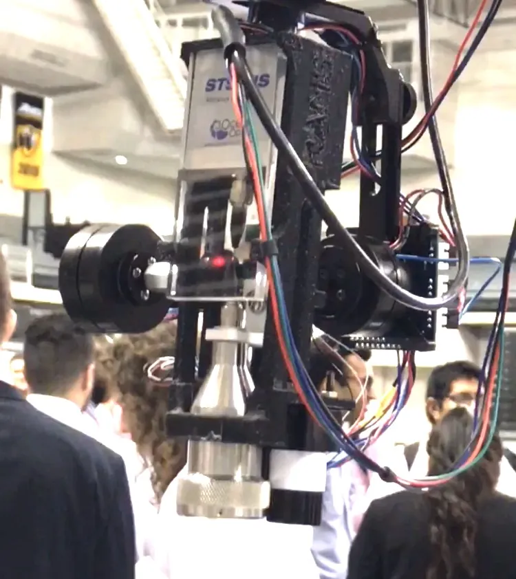

From SketchUp to a flying sensor package.
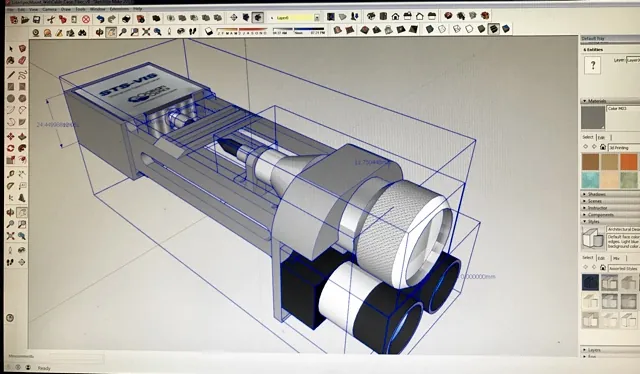
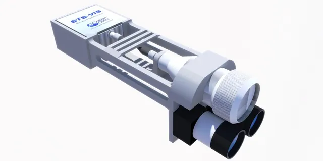
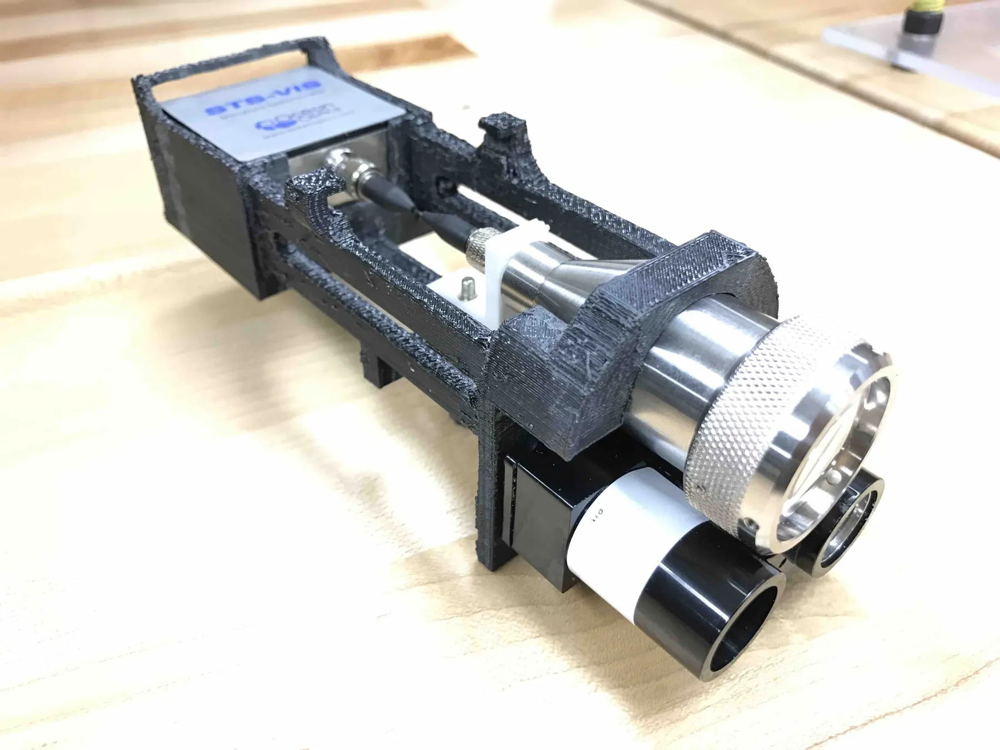
The sensor package consisted of a 3D printed sensor mount which cradled an STS-VIS Ocean Optics spectrometer connected to a collimating lens via a 5" custom-made fiber optic cable, as well as a LIDAR-Lite 3 laser rangefinder.
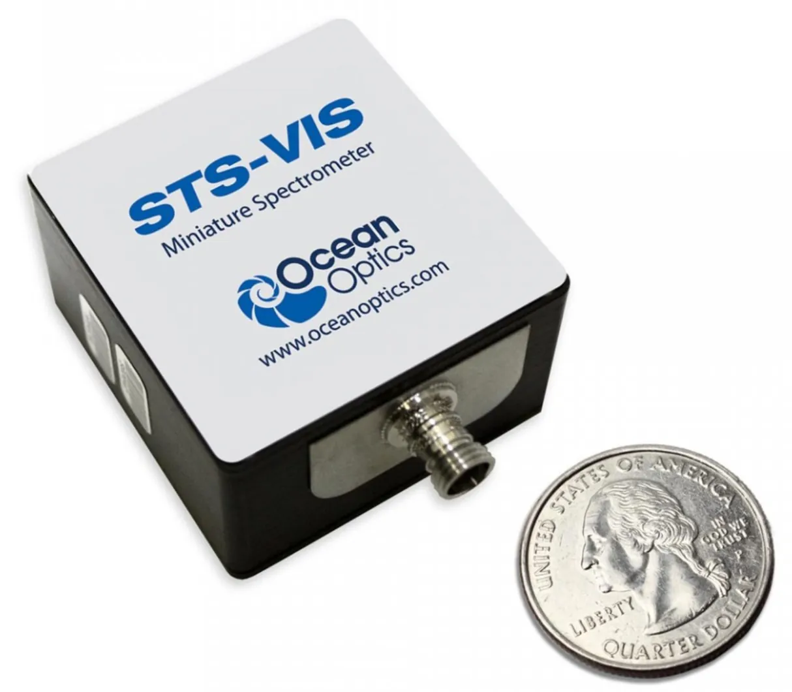
Ocean Optics STS-VIS spectrometer ↗
Captures wavelength-dependent reflectance.
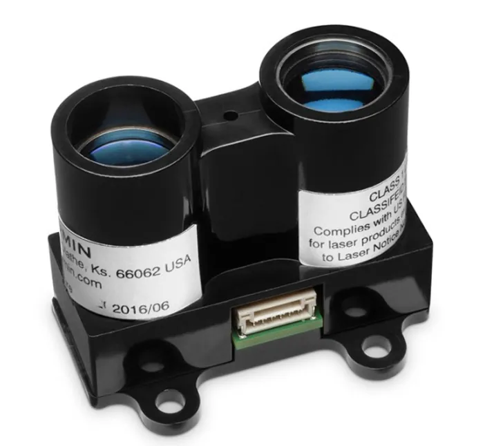
LIDAR-Lite v3 ↗
Laser rangefinder for 3D positioning.
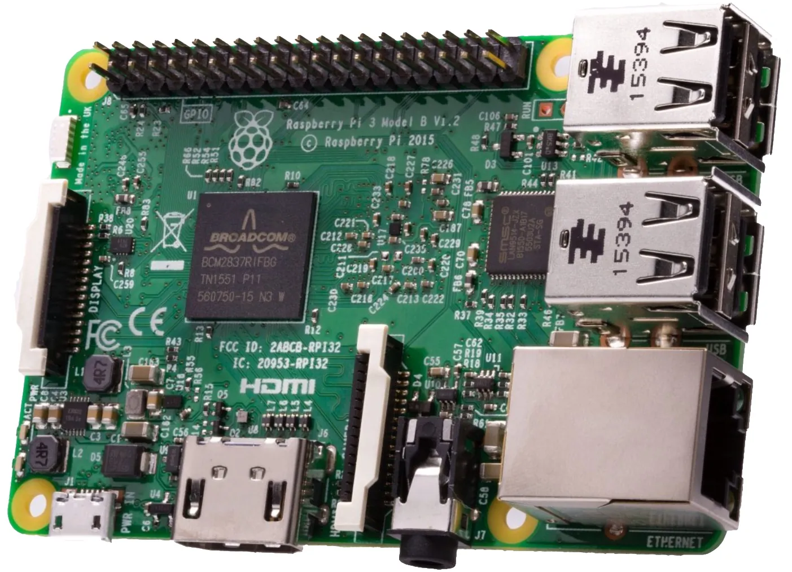
The brains: Raspberry Pi 3B ↗
Runs acquisition and mapping.
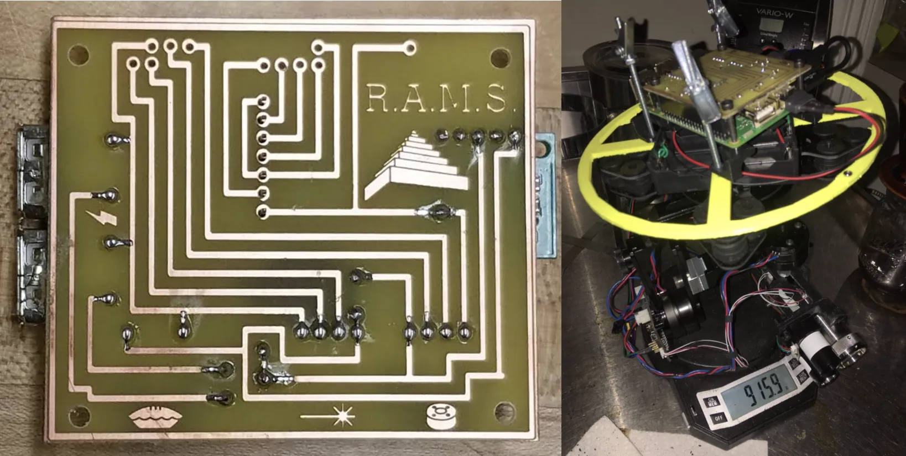
Exposition poster
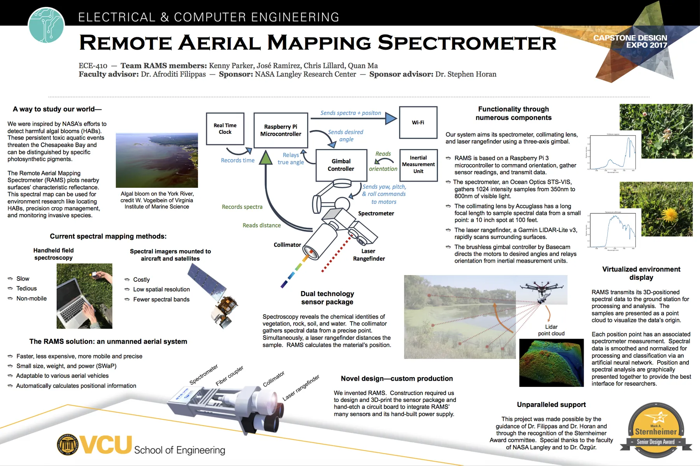
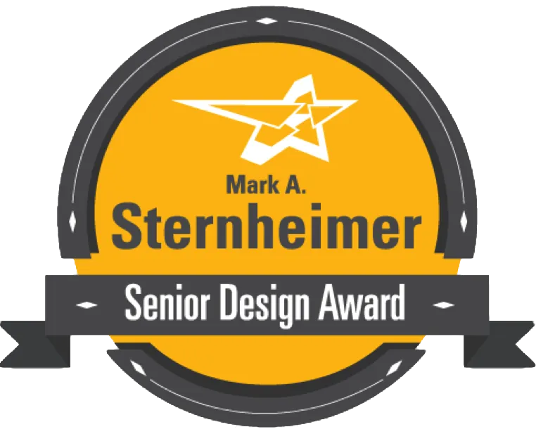
Sternheimer Design Award
Funded by Mr. Mark Sternheimer, major benefactor and Foundation Board member, this highly prestigious award is given to projects exhibiting outstanding innovation and entrepreneurship. (1)
NASA Langley Research Center
Mentored by Steve Horan, Principal Technologist, Game Changing Development Program at NASA Langley Research Center.
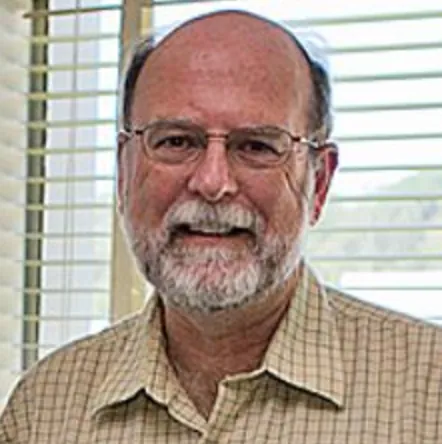
Steve Horan
Principal Technologist, NASA Langley
A recipe for success.
Kenny Parker
Computer Engineering
Chris Lillard
Electrical Engineering

Quan Ma
Computer Engineering
Afroditi V. Filippas, Ph.D.
Associate Dean at VCU for Undergraduate Studies
Special thanks to my teammates, an amazing team of engineers: Kenny (master programmer), Chris (electrical guru), Quan (task manager) and of course Dr. Filippas (outstanding advisor). In addition to my programming and 3D modeling experience, our team was a recipe for success. Thank you!
Want to learn more about the project?
Read the full R.A.M.S final report (PDF).
- More information about the Sternheimer Award: egr.vcu.edu/sternheimer

Autonomous Robot →